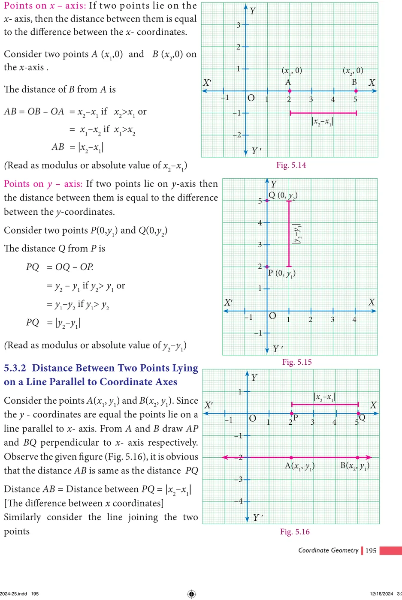
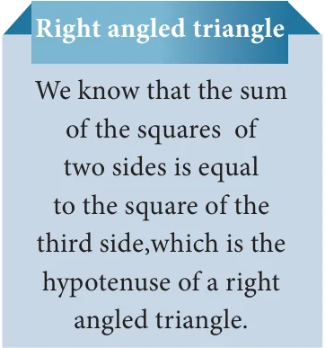
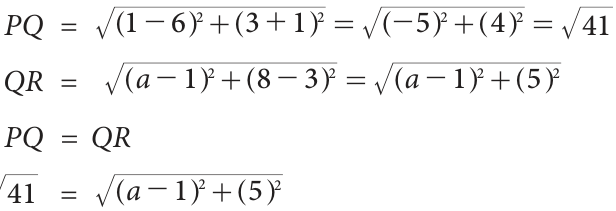
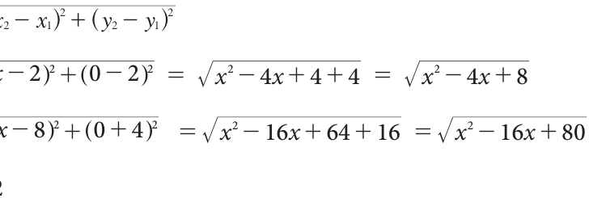
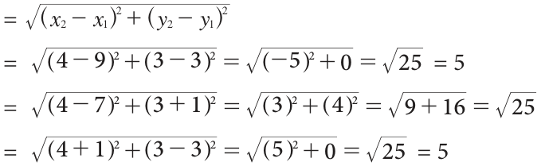

- Plot the following points in the coordinate plane and join them. What is your conclusion about the resulting figure?
- \((-5, 3)\) \(- 1,3) (0,3) (5,3)\) (ii) (0, \(- 4) (0\), \(- 2) (0,4) (0,5)\)
- Plot the following points in the coordinate plane. Join them in order. What type of geometrical shape is formed?
- (0,0) \((-4, 0)\) \(- 4\), \(- 4) (0\), \(- 4)\) (ii) \(- 3,3) (2,3)\) \(- 6\), \(- 1) (5\), \(- 1)\)

Question 5 is not needed after answering Note question 1. Obviously, the distance from The equation distance(A,B)=distance(B,A) point from point A to BB is the same as the distance to A, and we usually call it is not always obvious. Suppose that the the distance between points A and B. But road from A to B is a one-way street on as mathematicians we are supposed to note which you cannot go the other way? Then down properties as and when we see them, the distance from B to A might be longer ! so it is better to note this too: distance (A,B) But we will avoid all these complications = distance (B,A). This is true for all points A and assume that we can go both ways. and B on the plane, so of course question 5 is same as question 1.
What about the other questions? They are not the same. Since we know that the two houses are on the same street which is running north - south, the y-distance tells us the answer to question 1. Similarly, we know that the library and Shanmugam's house are on the same street running east - west, we can take the x-distance to answer question 2.
Questions 3 and 4 depend on what kind of routes are available. If we assume that the only streets available are parallel to the x and y axes at the points marked 1, 2, 3 etc then we answer these questions by adding the x and y distances. But consider the large field east of Akila's house.
If she can walk across the field, of course she would prefer it. Now there are many ways of going from one place to another, so when we talk of the distance between them, it is not precise. We need some way to fix what we mean. When there are many routes between A and B, we will use distance(A,B) to denote the distance on the shortest route between A and B.
Once we think of distance(A,B) as the "straight line distance" between A and B, there is an elegant way of understanding it for any points A and B on the plane. This is the important reason for using the co-ordinate system at all ! Before that, 2 more questions from our example.
- With the school as origin, define the coordinates of the two houses, the school and the library.
- Use the coordinates to give the distance between any one of these and another.
The "straight line distance" is usually called "as the crow flies". This is to mean that we don't worry about any obstacles and routes on the ground, but how we would get from A to B if we could fly. No bird ever flies on straight lines, though.
We can give a systematic answer to this: given any two points \(A =\) (x,y) and \(B =\) (xl,yl) on the plane, find distance(A,B). It is easy to derive a formula in terms of the four numbers x, y, xl and yl. This is what we set out to do now.
5.3.1 Distance Between Two Points on the Coordinate Axes


\(= ON - OM\) (Measuring the distance from O)
\(= x_2 - x_1\) ……..(1)
And \(RQ = NQ - NR\)
\(= NQ - MP\) (Opposite sides of the rectangle MNRP)
\(= y_2 - y_1\) ………..(2)
Step 2
Triangle PQR is right angled at R. (PR = NQ)
\(PQ^2 = PR^2 + RQ^2\) (By Pythagoras theorem)
\(d^2 = (x_2 - x_1)^2 + (y_2 - y_1)^2\)
\(d = \sqrt{(x_2 - x_1)^2 + (y_2 - y_1)^2}\) (Taking positive square root)
Note
Distance between two points
- Given two points \(P(x_1, y_1)\) and \(Q(x_2, y_2)\), the distance between these points is given by the formula \(d = \sqrt{(x_2 - x_1)^2 + (y_2 - y_1)^2}\).
- The distance between \(PQ\) = The distance between \(QP\)
i.e. \(\sqrt{(x_2 - x_1)^2 + (y_2 - y_1)^2} = \sqrt{(x_1 - x_2)^2 + (y_1 - y_2)^2}\)
- The distance of a point \(P(x_1, y_1)\) from the origin \(O(0,0)\) is \(OP = \sqrt{x_1^2 + y_1^2}\)
5.3.4 Properties of Distances
We have already seen that distance (A,B) = distance (B,A) for any points A, B on the plane. What other properties have you noticed? In case you have missed them, here are some: distance (A,B) \(= 0\) exactly when A and B denote the identical point: \(A = B\). distance (A,B) >0 for any two distinct points A and B. Now consider three points A, B and C. If we are given their co-ordinates and we find that their x-co-ordinates are the same then we know that they are collinear, and lie on a line parallel to the y-axis. Similarly, if their y-co-ordinates are the same then we know that they are collinear, and lie on a line parallel to the x-axis. But these are not the only conditions. Points (0,0), (1,1) and (2,2) are collinear as well. Can you think of what relationship should exist between these coordinates for the points to be collinear? The distance formula comes to our help here. We know that when A, B and C are the vertices of a triangle, we get,
distance(A,B) + distance(B,C) >distance(A,C) (after renaming the vertices suitably). When do three points on the plane not form a triangle? When they are collinear, of course. In fact, we can show that when,
distance(A,B) + distance(B,C) = distance(A,C), the points A, B and C must be collinear. Similarly, when A, B and C are the vertices of a right angled triangle, \(\angle ABC = 90°\) we know that:
distance(AB) + distance(BC) = distance(AC) with appropriate naming of vertices. We can also show that the converse holds: whenever the equality here holds for A, B and C, they must be the vertices of a right angled triangle. The following examples illustrate how these properties of distances are useful for answering

Show that the points A(7,10), B(-2,5), C(3,-4) are the vertices of a right angled triangle.
Solution
Here \(A = (7\), 10), \(B = (-2\), 5), \(C = (3,-4)\)
\(AB^2 = (x_2 - x_1)^2 + (y_2 - y_1)^2\)
\(= \sqrt{(-2-7)^2 + (5-10)^2}\)
= \(= \sqrt{(-9)^2 + (-5)^2}\)
\(= \sqrt{81 + 25}\)
\(= 106\)
\(AB = 106\) ... (1)
\(BC^2 = (x_2 - x_1)^2 + (y_2 - y_1)^2\)
\(= \sqrt{(3-(-2))^2 + (-4-5)^2} = \sqrt{(5)^2 + (-9)^2}\)

\(= 25 + 81 = 106\)
\(BC = 106\) ... (2)
\(AC^2 = (x_2 - x_1)^2 + (y_2 - y_1)^2\)
\(= \sqrt{(3-7)^2 + (-4-10)^2} = \sqrt{(-4)^2 + (-14)^2}\)
\(= 16 + 196 = 212\)
\(AC = 212\) ... (3)
From (1), (2) & (3) we get,
\(AB + BC = 106 + 106 = 212 = AC\)
Since \(AB + BC = AC\)
∴ ΔABC is a right angled triangle, right angled at B.
Show that the points A\((-4, -3)\), B(3,1), C(3,6), D\((-4, 2)\) taken in that order form the vertices of a parallelogram.
Solution
Let A\((-4, -3)\), B(3, 1), C(3, 6), D\((-4, 2)\) be the four vertices of any quadrilateral ABCD. Using the distance formula,
Let \(d = \sqrt{(x_2 - x_1)^2 + (y_2 - y_1)^2}\)
\(AB = \sqrt{(3+4)^2 + (1+3)^2} = \sqrt{49 + 16} = \sqrt{65}\) sides are equal
\(BC = \sqrt{(3-3)^2 + (6-1)^2} = \sqrt{0 + 25} = \sqrt{25} = 5\)
\(CD = \sqrt{(-4-3)^2 + (2-6)^2}\)
\(= \sqrt{(-7)^2 + (-4)^2} = \sqrt{49 + 16} = \sqrt{65}\)
\(AD = \sqrt{(-4+4)^2 + (2+3)^2} = \sqrt{0 + 25} = \sqrt{25} = 5\)
\(AB = CD = \sqrt{65}\) and \(BC = AD = 5\)
Here, the opposite sides are equal. Hence ABCD is a parallelogram.
Calculate the distance between the points A (7, 3) and B which lies on the x-axis whose abscissa is 11.
Solution
Since B is on the x-axis, the y-coordinate of B is 0.
So, the coordinates of the point B is (11, 0)
By the distance formula the distance between the points A (7, 3), B (11, 0) is
\(d = \sqrt{(x_2 - x_1)^2 + (y_2 - y_1)^2}\)
\(AB = \sqrt{(11-7)^2 + (0-3)^2} = \sqrt{(4)^2 + (-3)^2} = \sqrt{16 + 9} = \sqrt{25}\)
\(= 5\)
Find the value of 'a' such that \(PQ = QR\) where P, Q, and R are the
points whose coordinates are \((6, -1)\), (1, 3) and (a, 8) respectively.
Solution
Given P \((6, -1)\), Q (1, 3) and R (a, 8)

\(= =\)
Given = Therefore = ] \(- +]\)
\(41 = (a - 1)^2 + 25\) [Squaring both sides]
\((a - 1)^2 + 25 = 41\)
\((a - 1)^2 = 41 - 25\)
\((a - 1)^2 = 16\)
\(a - 1 = \pm 4\) [taking square root on both sides]
\(a = 1 + 4 a = 1 + 4\) or \(a = 1 - 4 a = 5\) or \(a = - 3\)
Let A(2, 2), B\((8, -4)\) be two given points in a plane. If a point P lies on
the X- axis (in positive side), and divides AB in the ratio 1: 2, then find the coordinates of P.
Solution
Given points are A(2, 2) and B\((8, -4)\) and let \(P =\) (x, 0) [P lies on x axis] By the distance formula

Given AP : \(PB = 1\) : 2
i.e. \(\frac{AP}{BP} = \frac{1}{2}\)
squaring on both sides,
\(4 \cdot AP^2 = BP^2\)
\(4(x^2 - 4x + 8) = x^2 - 16x + 80\)
\(4x^2 - 16x + 32 = x^2 - 16x + 80\)

\(3x^2 - 48 = 0\)
\(3x^2 = 48\)
\(x^2 = 16\), \(x = \pm 4\)
As the point P lies on x-axis (positive side), its x- coordinate cannot be \(- 4\). Hence the coordinates of P is(4, 0)

Show that (4, 3) is the centre of the circle passing through the points (9, 3), \((7, -1)\), \((-1, 3)\). Also find its radius.
Solution
Let P(4, 3), A(9, 3), B\((7, -1)\) and C\((-1, 3)\) If P is the centre of the circle which passes through the points A, B, and C, then P is equidistant from A, B and C (i.e.) \(PA = PB = PC\) By distance formula,

\(AP = PA =\)
\(BP = PB = = 5\)
\(CP = PC =\)
\(PA = PB = PC = 5\), Radius \(= 5\)
Therefore P is the centre of the circle, passing through A, B and C

- Find the distance between the following pairs of points.
- (1, 2) and (4, 3) (ii) (3,4) and \((-7, 2)\)
- (a, b) and (c, b) (iv) \((3, -9)\) and \((-2, 3)\)
- Determine whether the given set of points in each case are collinear or not.
- (7, \(- 2),(5,1),(3,4)\) (ii) (a, \(- 2)\), (a,3), (a,0)
- Show that the following points taken in order form an isosceles triangle.
- A (5,4), B(2,0), C \((-2, 3)\) (ii) A \((6, -4)\), B \((-2, -4)\), C (2,10)